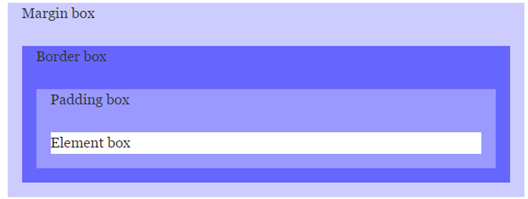

Вариант 4: обтекание рисунка слева, 3 колонки, рекламный блок снизу (fixed).
Этот блок имеет position: relative;, внутри него абсолютно позиционированный элемент (уголок с текстом).
| Значение по умолчанию | 0 |
|---|---|
| Наследуется | Нет |
| Применяется | Ко всем элементам |
| Ссылка на спецификацию | http://www.w3.org/TR/CSS21/box.html#propdef-margin |
Описание
Свойство margin задает поля (внешние отступы элемента) — отступы от внешней границы элемента до границ родительского элемента или до соседних элементов (см. рисунок блочной модели). Строчные элементы реагируют только на горизонтальные отступы.
Разрешается использовать одно, два, три или четыре значения, разделяя их между собой пробелом:
Возможные значения: ширина (px, em, %), auto (рассчитывается браузером).

Использование margin позволяет управлять расстоянием между элементами, создавая воздушные макеты. При этом важно помнить о схлопывании вертикальных отступов (margin collapsing) у соседних блочных элементов. Для избежания неожиданных эффектов применяют padding или обертки.
В CSS3 появились новые возможности, такие как margin collapsing с флекс-контейнерами, но базовая концепция осталась неизменной. При адаптивной верстке чаще всего используются относительные единицы (%, em, rem), чтобы макет масштабировался корректно.